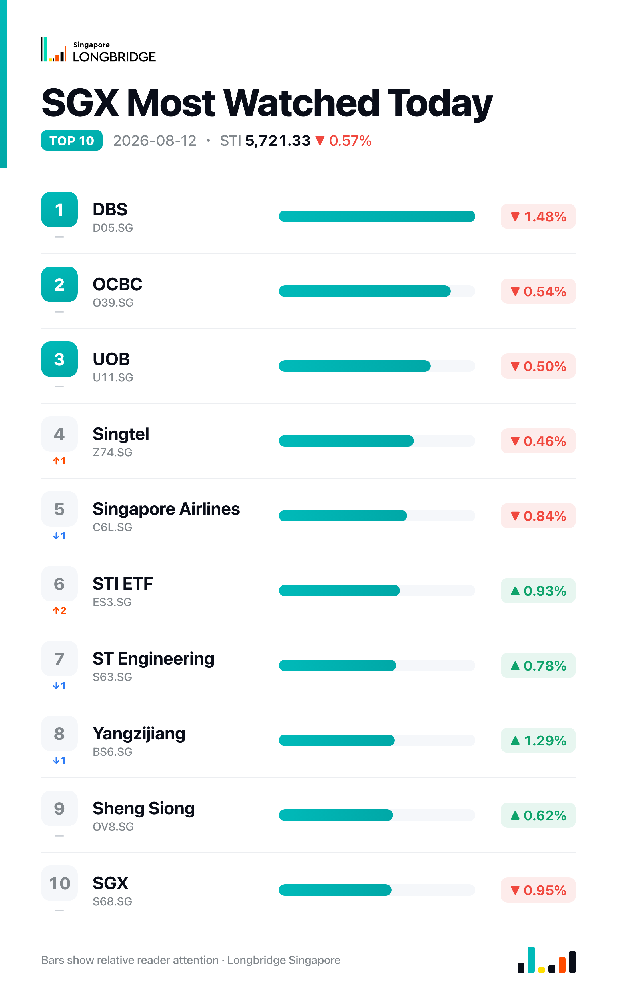

STI Falls 0.57% to 5,721.33 as All Three Banks Retreat Despite DBS's Record Profit
The Straits Times Index closed at 5,721.33 on Wednesday, down 32.84 points, or 0.57%, after trading between an intraday low of 5,707.01 and a high of 5,755.84. Declines were broad-based: 16 of the benchmark's 30 constituents closed lower against 10 advancers and four unchanged, with all three local banks among the session's laggards even as several property, shipbuilding and gaming counters advanced.
The session's weight was tilted by the banks. DBS fell 1.48% despite reporting record second-quarter net profit of S$3.08 billion and drawing higher price targets from RHB Group and UOB Kay Hian, while OCBC and UOB slipped 0.54% and 0.50% respectively. One report on the results noted analysts have grown split on the sector's outlook — more upbeat on DBS and OCBC's wealth-management momentum than on UOB, which faces questions over strategy execution and asset quality — a divergence that did not stop all three from closing lower in tandem. Outside the banks, gains in developers, shipbuilders and gaming names kept the index's decline in check.
Session Movers
UOL Group (U14.SG, +2.42%) was the session's best performer, extending a move that began August 6, when DBS Group Research named it one of seven Singapore "deep-value" picks tied to the S$5 billion Equity Development Market Programme, citing scope for asset monetisation and capital recycling under a Buy rating. The counter is also advancing plans to redevelop Marina Square, with tenants DP Architects and PSB Academy set to vacate by the first half of 2027 ahead of a partial revamp with co-owner SingLand. UOL trades at 0.71 times book, within its one-year range of 0.59–0.75 times, with a consensus Buy target of S$12.08 implying about 19% upside as of August 7.
Yangzijiang Shipbuilding (BS6.SG, +1.29%) added to Tuesday's near-11% surge, continuing its rally after first-half net profit rose 28.4% year-on-year to 5.4 billion yuan on higher contract prices and a more favourable product mix. Citi and CGS International both raised target prices and forecasts this week, citing strong order visibility, though analysts have cautioned that sustaining the momentum depends on securing fresh orders. The stock now trades at 2.9 times book, above its own one-year high of 2.77 times and the richest multiple among shipbuilding peers, whose industry median is 1.29 times.
DBS (D05.SG, -1.48%) was the session's sharpest decliner even after reporting record second-quarter net profit of S$3.08 billion, with wealth-management fees surging on stronger investment-product sales and bancassurance income. RHB Group and UOB Kay Hian responded by raising their target prices to S$81.20 and S$80 respectively, both above Wednesday's S$75.85 close. The retreat came as the stock already traded at 3.12 times book, above its own five-year high of 2.06 times and richer than at any point in the past five years.
Jardine Cycle & Carriage (C07.SG, -1.9%) was the session's weakest constituent, giving back some of the gains from its early-August rally, when the stock jumped 7.6% on a proposed special dividend of US$1.01 a share combining cash and an in-specie distribution of Toyota Motor shares. That announcement came alongside a 2% decline in first-half net profit to S$464 million and a proposed renaming to Jardine Matheson Southeast Asia. The stock trades at 8.8 times earnings, below the industry median of 16.55 times, with a consensus Hold rating and an S$28.59 target set August 5.

One point worth noting
Wednesday marked just the second session since August 5 in which all three local banks closed lower together — DBS down 1.48%, OCBC down 0.54% and UOB down 0.50% — reversing Tuesday's aligned gains. Record earnings and fresh target-price increases did not prevent the pullback, a pattern that echoes August 5's synchronised decline, which also followed a run of strong sector headlines — suggesting Wednesday's move reflects profit-taking rather than a shift in the earnings narrative.
This recap is for informational purposes only and does not constitute investment advice.